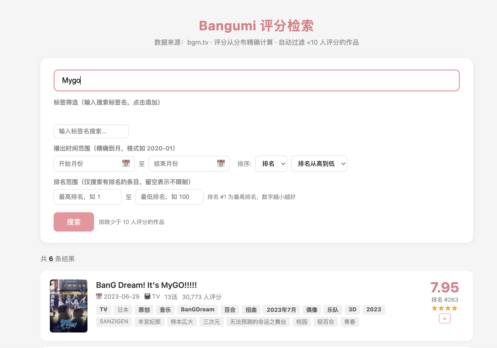

bangumi_explorer

项目灵感来源于在玩目标是Bangumi大师和二刺猿笑传之猜猜呗的时候苦于Bangumi原生的检索功能
于是就设计了这个Bangumi评分数据库构建与条件检索web应用，同时部署了网页版，但暂不考虑长期维护
注：当前由于Bangumi被墙，部署网页的服务器未设置代理，导致数据库信息滞后，加上白嫖的服务器马上到期了，不打算续费。如果想使用还是建议本地部署，本身这个数据库也很适合自己做一些有趣的数据分析，我也是看到了”目标是Bangumi大师“开发者制作的Bangumi数据分析功能才产生了这个项目的灵感